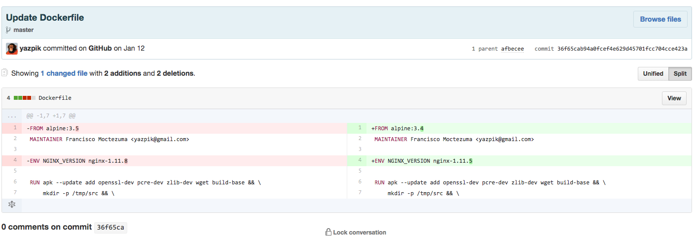
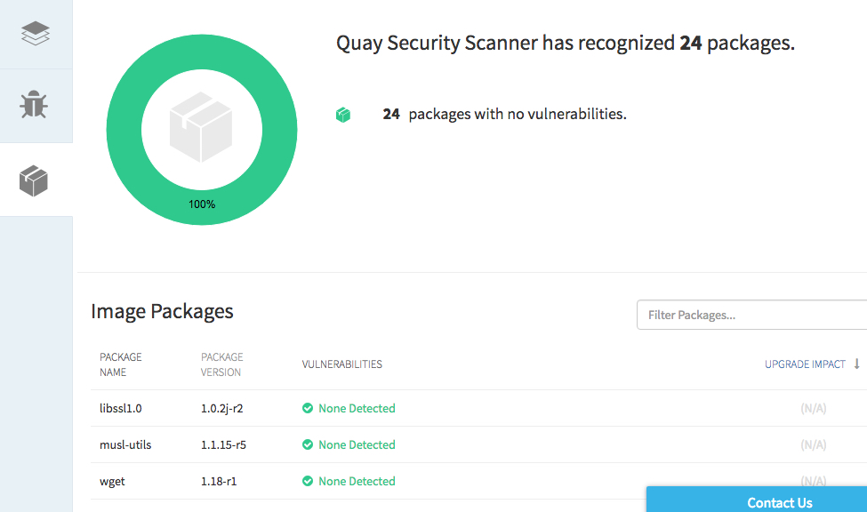

Kubernetes and Nginx plus demo
Load balancing a basic webbapp with nginxplus and kubernetes
I think the best way to learn something new is doing in practice, theory is always good
but I'm the kind of person who likes to do/try/test/ stuff and learn by doing/failing/changing.
I'm also kind of new on kubernetes, and watching live-demos out-there is like I don't know nothing about cloud.
It seems everyday is a new tool that is better that the one created the day before to solve a problem.
It's really crazy how the cloud technology is in the pace right now, and sometimes I feel overwhelmed, but I'm pretty sure I'm not the only one with that feeling.
I decided get hands on, follow some demos out-there and add something else, so I started with this demo
, having kubernetes creating pods and loadbalancing them using nginxplus,
The flow is the following
1.- NGINXplus load balancing a very simple webapp (configured on backend.conf)
2.- Console on top right is sending http load to the loadbalancer IP
3.- At the same time kubectl is talking with kubernetes API, changing replicas sets and deployments tags between containers
4.- Watch command of "kubectl get pods" to see how pods are being created and destroyed
A bit of broken english, I'm still improving :)
I pretty much followed this guide from Kelsey Hightower
And official guides from Nginxplus
For this demo I've created my own containers, and for that I found on Quay.io a phenomenal ally,
Spacemonkey container was built to test kubernetes, changes between tags, releases, etc
So I can test rollout/rollback updates in kubernetes very easily,
Another good thing is that the container is automatically created when I trigger a commit on Github due a Webhook configured on quay that is a really powerfull tool. (see Quay.io Webhooks)
To be more specific see this example of the Docker file being change between alpine and nginx versions Hash

To finish this post I'd like to bold this really cool feature on Quay, is called "Quay Security Scanner", it's based on Clair Which is OpenSource.
It help you out to see what could be wrong with the packages you are using to built your container, so you will be aware if you are hitting a critical vulnerability or not.

I have a lot of ideas to do with Kubernetes, I'm still learning a lot, but I'll try to document my progress.
Stay tunned.